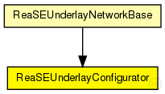
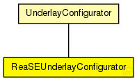

This documentation is released under the Creative Commons license
This documentation is released under the Creative Commons licenseConfigurator of the ReaSEUnderlay
Sets up an IPv4 network, adds overlay nodes to the network in init phase periodically with the interval set by "initPhaseCreationInterval", adds/removes/migrates overlay nodes after init phase according to the given churn model.
The following diagram shows usage relationships between types. Unresolved types are missing from the diagram. Click here to see the full picture.
The following diagram shows inheritance relationships for this type. Unresolved types are missing from the diagram. Click here to see the full picture.
| UnderlayConfigurator (simple module) |
UnderlayConfigurator base module |
If a module type shows up more than once, that means it has been defined in more than one NED file.
| ReaSEUnderlayNetworkBase (compound module) |
The InetUnderlay ned-file See also: ReaSEUnderlayConfigurator |
| Name | Type | Default value | Description |
|---|---|---|---|
| terminalTypes | string |
list of terminal types |
|
| churnGeneratorTypes | string |
a list of churn generators to be used |
|
| transitionTime | double |
time to wait before measuring after init phase is finished |
|
| measurementTime | double |
duration of the simulation after init and transition phase |
|
| gracefulLeaveDelay | double |
time between prekill and removal from overlay |
|
| gracefulLeaveProbability | double |
probability of gracefull leave |
| Name | Value | Description |
|---|---|---|
| display | i=block/cogwheel | |
| class | ReaSEUnderlayConfigurator |
// // Configurator of the ReaSEUnderlay // // Sets up an IPv4 network, adds overlay nodes to // the network in init phase periodically with the interval set by // "initPhaseCreationInterval", adds/removes/migrates overlay nodes after init // phase according to the given churn model. // simple ReaSEUnderlayConfigurator extends UnderlayConfigurator { parameters: @class(ReaSEUnderlayConfigurator); }
This documentation is released under the Creative Commons license